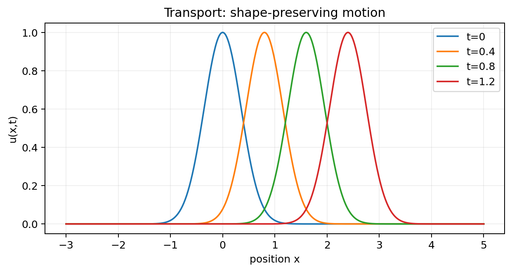
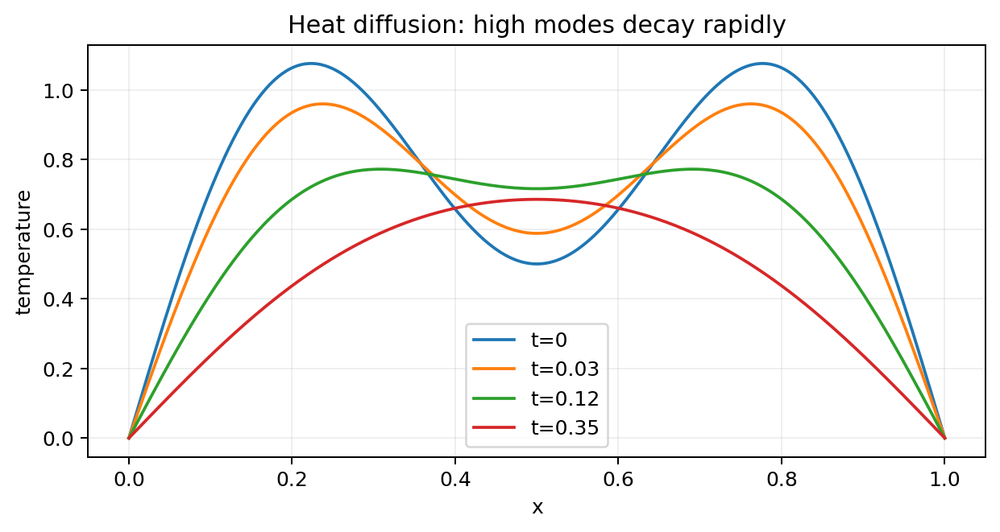
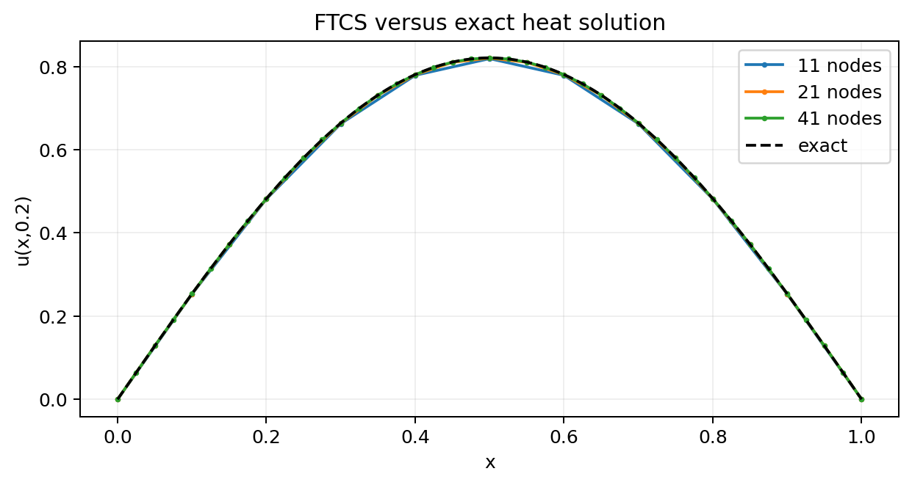
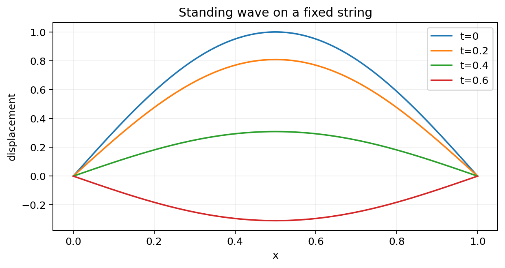
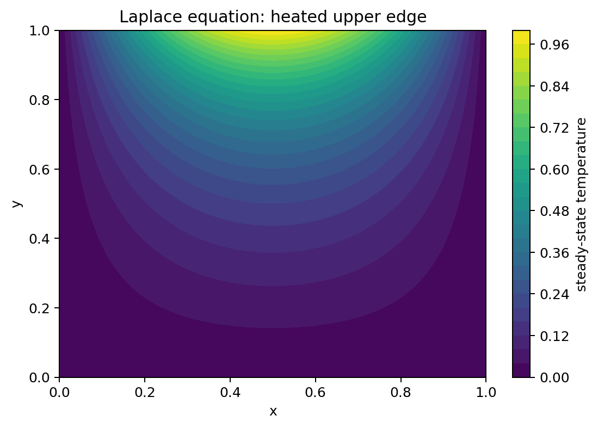
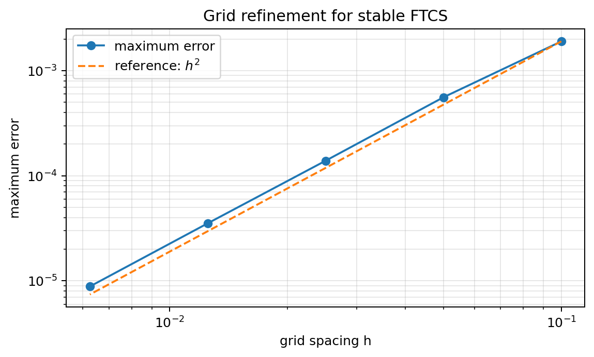

8. Partial Differential Equations and Computational Methods
Learning. After completing this chapter, students should be able to classify common second-order PDEs; derive and use characteristic curves for transport equations; formulate heat, wave, and Laplace boundary-value problems; solve elementary PDEs by separation of variables and Fourier series; explain stability and convergence of finite-difference schemes; implement and assess R and Python solvers; and interpret the relationship between mathematical models and their physical assumptions.
Interactive investigation: Heat diffusion
Explore the exact heat equation solution u(x,t)=exp(−κπ²t) sin(πx) on [0,1], with zero boundary values.
Explore: How does diffusivity affect the decay of the temperature profile?
Why partial differential equations?
A partial differential equation (PDE) constrains an unknown function of two or more independent variables through its partial derivatives. Unlike an ordinary differential equation, a PDE often describes how a quantity changes in both space and time. Examples include temperature \(u(x,t)\), string displacement \(u(x,t)\), and electrostatic potential \(u(x,y)\). PDEs connect the differential calculus of Chapters 3–4 to the integration and vector-field ideas of Chapters 5–6.
Definition. A PDE is linear in \(u\) when \(u\) and its derivatives occur to the first power, with coefficients depending only on independent variables. Its order is the highest derivative order present. A homogeneous linear PDE has zero forcing term.
The heat equation \(u_t=\alpha u_{xx}\), wave equation \(u_{tt}=c^2u_{xx}\), and Laplace equation \(u_{xx}+u_{yy}=0\) are second-order linear PDEs. The nonlinear equation \(u_t+uu_x=0\) is first-order but not linear. A PDE alone rarely determines a unique solution: initial data and/or boundary conditions are essential.
Classification of second-order equations
For the principal part \(Au_{xx}+2Bu_{xy}+Cu_{yy}\), with coefficients evaluated at a point, define \(\Delta=B^2-AC\). The equation is elliptic where \(\Delta<0\), parabolic where \(\Delta=0\), and hyperbolic where \(\Delta>0\). Laplace’s equation is elliptic; the heat equation is parabolic in space–time; the wave equation is hyperbolic. Classification helps predict qualitative behavior, but does not substitute for specifying a domain and data.
Example. For \(3u_{xx}+4u_{xy}+u_{yy}=0\), \(A=3\), \(B=2\), \(C=1\), so \(B^2-AC=1>0\): the equation is hyperbolic. For \(u_{xx}+u_{yy}=0\), \(A=C=1\), \(B=0\), so \(\Delta=-1\) and the equation is elliptic.
First-order transport and characteristics
Consider \(u_t+cu_x=0\) on the real line, with \(u(x,0)=f(x)\) and constant speed \(c\). Along a path \(x(t)\), \[\frac{\mathrm d}{\mathrm dt}u(x(t),t)=u_t+x'(t)u_x.\] Choosing \(x'(t)=c\) makes the right side zero. Thus \(u\) is constant along lines \(x-ct=\xi\).
Theorem — Transport solution. If \(f\) is continuously differentiable, then \(u(x,t)=f(x-ct)\) solves \(u_t+cu_x=0\) and \(u(x,0)=f(x)\).
Proof. The chain rule gives \(u_t=-cf'(x-ct)\) and \(u_x=f'(x-ct)\); their weighted sum vanishes. Setting \(t=0\) gives \(f(x)\).
Example. If \(f(x)=\exp(-4x^2)\) and \(c=2\), then \(u(x,t)=\exp[-4(x-2t)^2]\). The Gaussian pulse moves right at speed \(2\) without changing shape. Figure 1 shows several time slices.

For variable velocity \(a(x,t)\), the equation \(u_t+a(x,t)u_x=0\) uses the characteristic ODE \(x'(t)=a(x(t),t)\). When a forcing term \(g\) is present, \(u_t+a u_x=g\), the value evolves according to \(\mathrm du/\mathrm dt=g\) along each characteristic. Nonlinear transport can form intersecting characteristics and shocks; classical differentiable solutions may then cease to exist.
The heat equation and diffusion
Consider a thin homogeneous insulated rod of length \(L\) with fixed endpoint temperatures. Let \(u(x,t)\) denote its temperature relative to a reference temperature. Conservation of energy and Fourier’s law \(q=-k u_x\) lead to \[\rho C u_t=k u_{xx},\qquad u_t=\alpha u_{xx},\quad \alpha=\frac{k}{\rho C}>0.\] Here \(\rho\) is density, \(C\) specific heat, and \(\alpha\) thermal diffusivity. We first impose \[u(0,t)=u(L,t)=0,\qquad u(x,0)=f(x).\]
Separation of variables
Seek a nonzero product \(u(x,t)=X(x)T(t)\). Substitution gives \[\frac{T'}{\alpha T}=\frac{X''}{X}=-\lambda,\] so \(X''+\lambda X=0\) with \(X(0)=X(L)=0\), and \(T'+\alpha\lambda T=0\). The nontrivial spatial eigenfunctions and eigenvalues are \[X_n(x)=\sin\frac{n\pi x}{L},\qquad \lambda_n=\left(\frac{n\pi}{L}\right)^2,\quad n=1,2,\ldots.\] Superposition yields \[\label{eq:heat-series}u(x,t)=\sum_{n=1}^{\infty}b_n\sin\left(\frac{n\pi x}{L}\right)\exp\left[-\alpha\left(\frac{n\pi}{L}\right)^2t\right],\qquad b_n=\frac2L\int_0^L f(x)\sin\frac{n\pi x}{L}\,\mathrm dx.\] For piecewise smooth initial data satisfying the boundary conditions, this series gives the classical solution for \(t>0\) and approaches the initial profile in the usual Fourier sense as \(t\downarrow0\). Higher-frequency modes decay faster, which mathematically explains diffusion’s smoothing effect.
Example. For \(L=1\), \(\alpha=0.1\), and \(f(x)=\sin(\pi x)+\tfrac12\sin(3\pi x)\), \[u(x,t)=e^{-0.1\pi^2t}\sin(\pi x)+\tfrac12e^{-0.9\pi^2t}\sin(3\pi x).\] The third mode decays nine times as fast in its exponent as the first mode.

An energy estimate
For a sufficiently smooth solution with zero endpoint values, let \(E(t)=\tfrac12\int_0^L u(x,t)^2\,\mathrm dx\). Differentiating and integrating by parts, \[E'(t)=\alpha\int_0^L uu_{xx}\,\mathrm dx=-\alpha\int_0^L u_x^2\,\mathrm dx\le0.\] The boundary term \([uu_x]_0^L\) vanishes. Thus the squared-temperature energy cannot increase. This estimate also gives uniqueness: apply it to the difference of two solutions having identical initial and boundary data.
Fourier series as a computational tool
For \(f(x)=x(1-x)\) on \([0,1]\), the sine coefficients can be computed by integration: \[b_n=2\int_0^1 x(1-x)\sin(n\pi x)\,\mathrm dx=\frac{4(1-(-1)^n)}{n^3\pi^3}.\] Only odd modes occur, and \(b_n=8/(n^3\pi^3)\) for odd \(n\). A truncated solution \(u_N\) retains the first \(N\) modes. Because of exponential damping, truncation typically becomes more accurate for fixed \(N\) as \(t\) increases. A large coefficient error near \(t=0\) should not be mistaken for instability of the PDE.
Remark — Computational connection. The full reproducible numerical implementation is supplied in the companion code, with parallel R and Python solutions later in this chapter.
Checkpoint. Why does \(\sin(5\pi x/L)\) decay \(25\) times as fast in the exponential rate as \(\sin(\pi x/L)\)? Which assumptions were used to derive the sine basis?
Finite differences for the heat equation
Let \(x_j=jh\) and \(t_n=n\Delta t\). Centered spatial differences and a forward time difference give \[\frac{U_j^{n+1}-U_j^n}{\Delta t}=\alpha\frac{U_{j-1}^n-2U_j^n+U_{j+1}^n}{h^2},\] so \[\label{eq:ftcs}U_j^{n+1}=rU_{j-1}^n+(1-2r)U_j^n+rU_{j+1}^n,\qquad r=\frac{\alpha\Delta t}{h^2}.\] For this explicit forward-time, centered-space (FTCS) scheme in one spatial dimension, the standard stability requirement is \(0\le r\le\tfrac12\). To see its origin, insert a Fourier mode \(U_j^n=G^n e^{ij\theta}\) into the scheme: \[G=1-4r\sin^2(\theta/2).\] Demanding \(|G|\le1\) for every \(\theta\) yields \(r\le\tfrac12\). With smooth solutions, local truncation error is \(O(\Delta t+h^2)\), and the stable scheme converges under the usual regularity assumptions.
Remark — Computational connection. The full reproducible numerical implementation is supplied in the companion code, with parallel R and Python solutions later in this chapter.

An implicit backward Euler method evaluates the second spatial difference at time \(n+1\); it requires solving a linear system but avoids the restrictive FTCS stability limit. Crank–Nicolson averages the spatial operator across the old and new times and is second order in time for smooth solutions. Neither unconditional linear stability nor a small residual guarantees accuracy on a coarse grid.
The wave equation and vibrating strings
For a taut string with constant tension \(T\) and linear mass density \(\mu\), small transverse displacements satisfy \[u_{tt}=c^2u_{xx},\qquad c=\sqrt{T/\mu}.\] For fixed endpoints \(u(0,t)=u(L,t)=0\), initial displacement \(f(x)\), and initial velocity \(g(x)\), separation of variables gives \[\begin{aligned} u(x,t)&=\sum_{n=1}^{\infty}\left[A_n\cos\left(\frac{cn\pi t}{L}\right)+B_n\sin\left(\frac{cn\pi t}{L}\right)\right]\sin\left(\frac{n\pi x}{L}\right),\\ A_n&=\frac2L\int_0^L f(x)\sin\left(\frac{n\pi x}{L}\right)\,\mathrm dx,\\ B_n&=\frac{2}{cn\pi}\int_0^L g(x)\sin\left(\frac{n\pi x}{L}\right)\,\mathrm dx. \end{aligned}\] Unlike the heat equation, ideal undamped wave modes oscillate rather than decay. For a string with initial shape \(\sin(\pi x/L)\) and zero initial velocity, \(u(x,t)=\sin(\pi x/L)\cos(c\pi t/L)\).
D’Alembert’s formula
On the entire real line, the solution of \(u_{tt}=c^2u_{xx}\) with \(u(x,0)=f(x)\) and \(u_t(x,0)=g(x)\) is \[u(x,t)=\frac{f(x-ct)+f(x+ct)}2+\frac1{2c}\int_{x-ct}^{x+ct}g(s)\,\mathrm ds.\] This formula exhibits finite propagation speed: the value at \((x,t)\) depends only on initial data from the interval \([x-ct,x+ct]\). It does not apply unchanged to a finite string with reflecting boundary conditions.

Energy and numerical stability
For a smooth fixed-end string, the mechanical energy \[\mathcal E(t)=\frac12\int_0^L\left(u_t^2+c^2u_x^2\right)\,\mathrm dx\] is constant: differentiate, use \(u_{tt}=c^2u_{xx}\), integrate by parts, and use the endpoint conditions. A centered scheme, \[U_j^{n+1}=2U_j^n-U_j^{n-1}+\lambda^2(U_{j-1}^n-2U_j^n+U_{j+1}^n),\qquad\lambda=\frac{c\Delta t}{h},\] requires \(\lambda\le1\) for standard stability in one dimension. The first time step needs a separate initialization using the prescribed initial velocity; simply copying the initial displacement to time step one introduces an error.
Laplace’s equation and harmonic functions
A twice continuously differentiable function \(u\) is harmonic if \[\Delta u=u_{xx}+u_{yy}=0.\] This equation models steady-state temperature without internal sources, electrostatic potential in charge-free regions, and idealized incompressible potential flow. The polynomial \(u(x,y)=x^2-y^2\) is harmonic because \(u_{xx}=2\) and \(u_{yy}=-2\).
Theorem — Maximum principle, informal version. A nonconstant harmonic function on a bounded connected domain cannot attain a strict maximum or minimum at an interior point. For a continuous harmonic function on the closure of a bounded domain, extrema occur on the boundary.
This principle explains why boundary values control the interior solution. It also implies uniqueness for the Dirichlet problem: if two harmonic functions agree on the boundary, their difference has zero boundary values and must vanish throughout the domain.
The five-point stencil
On a uniform square grid with spacing \(h\), approximate \(\Delta u=0\) by \[U_{i,j}=\frac14\left(U_{i+1,j}+U_{i-1,j}+U_{i,j+1}+U_{i,j-1}\right).\] Thus every interior value is the average of its four nearest neighbors. Jacobi iteration replaces all interior values simultaneously using the previous iteration; Gauss–Seidel updates in place. Convergence may be slow on fine grids, making sparse linear solvers and multigrid methods attractive alternatives.
Remark — Computational connection. The full reproducible numerical implementation is supplied in the companion code, with parallel R and Python solutions later in this chapter.
The stopping rule above measures successive updates, not the true error. A practical implementation should also examine the discrete Laplacian residual and compare solutions across successively refined grids.

Poisson’s equation and source terms
With an internal source \(s(x,y)\),
a common model is \(-\Delta u=s\). The
five-point stencil becomes \[4U_{i,j}-U_{i+1,j}-U_{i-1,j}-U_{i,j+1}-U_{i,j-1}=h^2s(x_i,y_j).\]
In matrix form, \(A\boldsymbol{U}=\boldsymbol{b}\), where
\(A\) is sparse. For large problems,
storing \(A\) as a dense array wastes
memory. SciPy’s scipy.sparse and
scipy.sparse.linalg offer efficient solvers. The sign of
the source term depends on the modeling convention; always verify the
PDE before interpreting the solution.
Two-dimensional diffusion and vibrating membranes
For \(u(x,y,t)\), the two-dimensional heat equation is \(u_t=\alpha(u_{xx}+u_{yy})\). An explicit five-point update with equal spatial spacings has the form \[U_{i,j}^{n+1}=U_{i,j}^n+r\big(U_{i+1,j}^n+U_{i-1,j}^n+U_{i,j+1}^n+U_{i,j-1}^n-4U_{i,j}^n\big),\] where \(r=\alpha\Delta t/h^2\); the standard stability condition is \(r\le1/4\). For a vibrating membrane, \(u_{tt}=c^2(u_{xx}+u_{yy})\). Rectangular domains admit separated sine modes, while circular domains lead to Bessel functions. The geometry of the domain determines the eigenfunctions and their frequencies.
Boundary conditions and mathematical modeling
Three common boundary types are Dirichlet (\(u\) prescribed), Neumann (normal derivative \(\partial u/\partial n\) prescribed), and Robin (a linear combination of \(u\) and \(\partial u/\partial n\) prescribed). For heat flow, Dirichlet conditions model controlled endpoint temperatures, Neumann conditions model imposed flux (including insulation when zero), and Robin conditions model heat exchange with the surroundings. Different conditions can change the long-time state, conserved quantities, and admissible eigenfunctions.
Checkpoint. A student models an insulated rod using \(u(0,t)=u(L,t)=0\). Explain why this is not the same as insulation. Write the appropriate homogeneous Neumann conditions.
A complete computational investigation
Question. How does mesh refinement affect the accuracy of an explicit numerical heat solver? Use \(L=1\), \(\alpha=0.1\), \(f(x)=\sin(\pi x)\), and \(t_*=0.2\). The exact solution is \[u(x,t_*)=\exp(-\alpha\pi^2t_*)\sin(\pi x).\] For \(N=21,41,81,161\) spatial grid points, select time steps so that \(r\approx0.45\), compute the maximum error, and plot error against \(h\) on logarithmic axes. Since \(\Delta t\propto h^2\), the global error is expected to behave approximately like \(O(h^2)\) for this smooth example. Estimate the slope by linear regression of \(\log(\mathrm{error})\) against \(\log h\); a slope near \(2\) supports the predicted convergence order. Repeat with \(r>1/2\) and observe the instability only in a controlled computational experiment; do not treat unstable results as physically meaningful.

Further connections: spectral methods and uncertainty
Finite differences approximate derivatives locally; spectral methods approximate the solution in a global basis such as Fourier modes. For sufficiently smooth periodic solutions, spectral approximations can converge much faster with increasing mode count than low-order finite differences. However, discontinuities can create oscillatory artifacts, and nonperiodic boundaries require appropriate bases or numerical treatment. In any simulation, distinguish discretization error, iteration error, floating-point effects, uncertain model parameters, and discrepancies between the mathematical model and reality. A visually smooth plot does not establish numerical correctness.
Additional mathematical examples from the R manuscript
Variable-speed transport
Consider \(u_t+xu_x=0\) with \(u(x,0)=x^2\). The characteristic equations are \(x'(t)=x(t)\) and \(u'(t)=0\), giving \(x(t)=\xi e^t\) and \(\xi=xe^{-t}\). Thus \[u(x,t)=x^2e^{-2t}.\] Direct differentiation confirms \(u_t=-2x^2e^{-2t}\) and \(xu_x=2x^2e^{-2t}\).
A harmonic polynomial and boundary data
The function \(u(x,y)=x^2-y^2\) is harmonic because \(u_{xx}+u_{yy}=2-2=0\). Prescribing its trace on a bounded domain gives a Dirichlet problem with this known solution. This provides an exact benchmark for a numerical Laplace solver.
A single standing-wave mode
For fixed endpoints on \([0,L]\), \(u(x,0)=\sin(\pi x/L)\) and \(u_t(x,0)=0\) produce \[u(x,t)=\sin(\pi x/L)\cos(c\pi t/L).\] Differentiation verifies \(u_{tt}=c^2u_{xx}\) and both initial conditions.
Solving the same PDE problems using R
We first check the exact heat solution and then approximate it by
forward-time centered-space differences. Set \(L=1\), \(\alpha=0.1\), and \(u(x,0)=\sin(\pi x)\) with zero-temperature
endpoints. For \(t_*=0.2\), the exact
benchmark is \[u(x,t_*)=e^{-0.1\pi^2t_*}\sin(\pi x).\]
The companion file code/chapter08_paired.R is a
self-contained base-R implementation. It uses \(r=0.4\) and adjusts the number of time
steps to reach the requested final time exactly.
heat_ftcs <- function(N=41, alpha=0.1, T=0.2) {
x <- seq(0, 1, length.out=N); h <- x[2]-x[1]
steps <- ceiling(T*alpha/(0.4*h^2))
dt <- T/steps; r <- alpha*dt/h^2
u <- sin(pi*x)
for (k in seq_len(steps)) {
v <- u
v[2:(N-1)] <- u[2:(N-1)] + r*(
u[1:(N-2)]-2*u[2:(N-1)]+u[3:N])
u <- v
}
exact <- exp(-alpha*pi^2*T)*sin(pi*x)
list(h=h, error=max(abs(u-exact)), r=r)
}
print(heat_ftcs())
stopifnot(heat_ftcs()$r <= 0.5)Solving the same PDE problems using Python
The companion file code/chapter08_paired.py performs
precisely the same computation using NumPy. The explicit update and
benchmark are intentionally aligned with the R implementation.
import numpy as np
def heat_ftcs(N=41, alpha=0.1, T=0.2):
x = np.linspace(0, 1, N)
h = x[1]-x[0]
steps = int(np.ceil(T*alpha/(0.4*h*h)))
dt = T/steps
r = alpha*dt/(h*h)
u = np.sin(np.pi*x)
for _ in range(steps):
v = u.copy()
v[1:-1] = u[1:-1]+r*(u[:-2]-2*u[1:-1]+u[2:])
u = v
exact = np.exp(-alpha*np.pi**2*T)*np.sin(np.pi*x)
return h, np.max(np.abs(u-exact)), r
print(heat_ftcs())
assert heat_ftcs()[2] <= 0.5Comparing R and Python solutions
Both programs use the same physical model, initial and boundary conditions, grid spacing, final time, and stability-controlled time step. Evaluate \(N=21,41,81,161\) and compare maximum errors; use a log–log plot to estimate convergence order. Agreement between implementations is a useful reproducibility check, but convergence toward an independent exact solution is stronger numerical evidence.
Real-world application: thermal diffusion in a laboratory specimen
A thin specimen is held at a reference temperature at both ends, while its initial temperature has a single sinusoidal peak. Under constant thermal diffusivity and one-dimensional conduction, the heat equation predicts how the profile decays. The decay time depends on \(\alpha/L^2\); therefore a specimen twice as long relaxes four times more slowly under otherwise identical assumptions. Students should explain why internal heat sources, temperature-dependent conductivity, and imperfect boundary control would require a more elaborate model.
Advanced extension from the R manuscript: power series and Frobenius methods
Separation of variables sometimes produces an ordinary differential equation whose solutions are not elementary. A regular-point power series seeks \(y(x)=\sum_{n=0}^{\infty}a_nx^n\) and derives a recurrence by substitution. At a regular singular point, the Frobenius ansatz \(y(x)=x^r\sum_{n=0}^{\infty}a_nx^n\) may be required. For the illustrative Euler equation \[x^2y''+xy'-\nu^2y=0,\qquad x>0,\] substituting \(y=x^r\) gives the indicial equation \(r(r-1)+r-\nu^2=r^2-\nu^2=0\). For \(\nu>0\), independent solutions are \(x^\nu\) and \(x^{-\nu}\). When \(\nu=0\), a repeated root leads to solutions \(1\) and \(\log x\). This extension is included because the original R manuscript develops power-series methods; it is not presented as a prerequisite for the main finite-difference investigations.
Mathematical foundations: weak formulations and conservation
Conservation laws and fluxes
A conservation equation expresses the fact that change within a region equals inflow plus generation. If \(u\) is the density of a conserved quantity, \(\mathbf J\) its flux, and \(q\) a volumetric source, the integral balance on a fixed region \(\Omega\) is \[\frac{\mathrm d}{\mathrm dt}\int_\Omega u\,\mathrm dV=-\int_{\partial\Omega}\mathbf J\cdot\mathbf n\,\mathrm dS+\int_\Omega q\,\mathrm dV.\] Applying the divergence theorem and localizing gives \(u_t+\nabla\cdot\mathbf J=q\). Fourier’s law \(\mathbf J=-\alpha\nabla u\) yields \(u_t=\alpha\Delta u+q\) for constant \(\alpha\). When diffusivity depends on location, the correct form is \(u_t=\nabla\cdot(\alpha(x)\nabla u)+q\), not \(\alpha(x)\Delta u+q\); the difference is \(\nabla\alpha\cdot\nabla u\).
Example — A spatially varying diffusivity. For \(\alpha(x)=1+x\) and \(u(x,t)=x^2\), the diffusion operator is \(\partial_x((1+x)2x)=2+4x\). The expression \(\alpha u_{xx}\) gives only \(2+2x\). Thus the two models are not interchangeable.
The weak form of a diffusion equation
Let \(u_t-\alpha\Delta u=f\) on a bounded region \(\Omega\), with \(u=0\) on its boundary. Multiply by a smooth test function \(v\) vanishing on the boundary and integrate: \[\int_\Omega u_t v\,\mathrm dV+\alpha\int_\Omega \nabla u\cdot\nabla v\,\mathrm dV=\int_\Omega fv\,\mathrm dV.\] Integration by parts removes the second spatial derivatives and reveals why boundary conditions matter. This is the starting point of finite-element methods, which complement the finite-difference methods emphasized in this chapter. The statement is a formulation, not a claim that all solutions possess classical second derivatives.
Checkpoint. Explain why a discontinuity in material conductivity is more naturally represented by \(\nabla\cdot(\alpha\nabla u)\) than by \(\alpha\Delta u\).
A closer look at uniqueness and maximum principles
Heat-equation uniqueness by energy estimates
Suppose \(u\) and \(v\) solve the same heat equation with the same initial data and homogeneous Dirichlet boundary values. Their difference \(w=u-v\) satisfies \(w_t=\alpha w_{xx}\) and zero data. For \(E(t)=\tfrac12\int_0^L w(x,t)^2\,\mathrm dx\), integration by parts gives \[E'(t)=\alpha\int_0^L w w_{xx}\,\mathrm dx=-\alpha\int_0^L w_x^2\,\mathrm dx\le0.\] Because \(E(0)=0\) and \(E\ge0\), \(E(t)=0\) for all \(t\), so \(w=0\). This proves uniqueness in the stated regularity class. It does not by itself prove existence.
The maximum principle for harmonic functions
If \(u\) is harmonic in a bounded connected domain and continuous up to the boundary, its maximum and minimum occur on the boundary unless it is constant. Consequently, the Dirichlet problem has at most one classical solution: the difference of two solutions is harmonic and vanishes on the boundary. This theorem also provides a valuable numerical diagnostic: a converged discrete Laplace solution with nonnegative boundary temperatures should not develop a larger interior maximum.
Example — A diagnostic for a steady-state solver. A square plate has boundary values between \(0\) and \(10\). A numerical interior temperature of \(12\) is inconsistent with the maximum principle for source-free steady-state conduction; investigate the boundary indexing, source term, and update formula before interpreting the plot.
Finite-difference accuracy, stability, and consistency
Local truncation error
For a smooth exact solution, Taylor expansion about \((x_j,t_n)\) gives \[\frac{u(x_j,t_{n+1})-u(x_j,t_n)}{\Delta t}=u_t+\frac{\Delta t}{2}u_{tt}+O(\Delta t^2),\] and \[\frac{u(x_{j-1},t_n)-2u(x_j,t_n)+u(x_{j+1},t_n)}{h^2}=u_{xx}+\frac{h^2}{12}u_{xxxx}+O(h^4).\] Therefore the forward-time centered-space (FTCS) scheme is first-order in time and second-order in space: \(O(\Delta t+h^2)\) under sufficient smoothness. If stability forces \(\Delta t=O(h^2)\), its overall error may be second-order as the mesh is refined.
A discrete energy and positivity argument
The update can be written \(U_j^{n+1}=rU_{j-1}^n+(1-2r)U_j^n+rU_{j+1}^n\), where \(r=\alpha\Delta t/h^2\). When \(0\le r\le1/2\), all three coefficients are nonnegative and sum to one. Every new interior value is a convex combination of old neighboring values. Thus the scheme preserves bounds under compatible fixed boundary conditions. This intuitive maximum-principle argument is separate from, but consistent with, Fourier-mode stability analysis.
Example — Stability is not accuracy. With \(\alpha=0.1\), \(h=0.1\), and \(\Delta t=0.04\), \(r=0.4\), so FTCS satisfies the usual stability restriction. A stable computation may still have substantial error on a coarse grid; stability prevents amplification of certain perturbations, not discretization error itself.
Why an unstable run can look harmless at first
For a discrete Fourier mode \(U_j^n=G^n e^{\mathrm i j\theta}\), substitution gives \[G(\theta)=1-4r\sin^2(\theta/2).\] When \(r>1/2\), some modes satisfy \(|G|>1\). Smooth initial data can contain very little energy in those modes, so numerical instability may emerge only after roundoff or boundary perturbations excite them. Demonstrations of instability should therefore report the grid, duration, and observed amplitude rather than relying on a single snapshot.
The implicit backward-Euler alternative
The backward-Euler discretization evaluates the second difference at the new time: \[\frac{U_j^{n+1}-U_j^n}{\Delta t}=\alpha\frac{U_{j-1}^{n+1}-2U_j^{n+1}+U_{j+1}^{n+1}}{h^2}.\] For the interior vector \(\mathbf U^n\), this is \(A\mathbf U^{n+1}=\mathbf U^n\), where \(A\) is tridiagonal with diagonal \(1+2r\) and neighboring diagonals \(-r\). For constant-coefficient diffusion the method is unconditionally stable in the usual linear sense, but it is only first-order accurate in time. Large steps may be stable yet physically inaccurate.
Example — Explicit versus implicit. Take \(L=1\), \(\alpha=0.1\), \(h=0.05\), and \(\Delta t=0.02\). Then \(r=0.8\). FTCS violates \(r\le1/2\), while backward Euler remains linearly stable. Compare both against \(u(x,t)=e^{-\alpha\pi^2t}\sin(\pi x)\) and explain why stability alone cannot determine the preferable time step.
A deeper connection: Fourier modes and physical time scales
For the heat equation on \([0,L]\) with zero endpoints, mode \(n\) decays as \(\exp(-t/\tau_n)\), where \[\tau_n=\frac{L^2}{\alpha n^2\pi^2}.\] Thus \(\tau_1\) is the slowest characteristic decay time; \(\tau_3=\tau_1/9\). Dimensional analysis independently predicts the scale \(L^2/\alpha\). This is a useful check on both formulas and code: changing \(L\) by a factor of two while keeping \(\alpha\) fixed multiplies the fundamental decay time by four.
Example — Dimensional prediction. Two geometrically similar rods have lengths \(L\) and \(2L\) and the same diffusivity. Their fundamental relaxation times are in the ratio \(1:4\). A numerical experiment that predicts the opposite trend likely contains an incorrect spatial scaling or diffusivity parameter.
Nondimensionalization
Let \(\xi=x/L\), \(\tau=\alpha t/L^2\), and \(v(\xi,\tau)=u(L\xi,L^2\tau/\alpha)\). Then \(v_\tau=v_{\xi\xi}\) on \(0<\xi<1\). The transformation removes the physical parameters from the interior equation and clarifies which numerical comparisons are meaningful. In the wave equation, the corresponding nondimensional time is \(\tau=ct/L\).
Paired computational laboratory: explicit and implicit heat solvers
The following paired algorithms solve the same initial-boundary value problem: \(u_t=0.1u_{xx}\) on \(0<x<1\), \(u(0,t)=u(1,t)=0\), and \(u(x,0)=\sin(\pi x)\). Both use \(N\) subintervals, the same final time \(T\), and the exact solution \(e^{-0.1\pi^2T}\sin(\pi x)\) as an independent benchmark. Full executable programs are included in the source archive.
R implementation
heat_ftcs <- function(N = 40, T = 0.2, alpha = 0.1) {
x <- seq(0, 1, length.out = N + 1)
h <- 1 / N
steps <- ceiling(T * alpha / (0.4 * h^2))
dt <- T / steps
r <- alpha * dt / h^2
u <- sin(pi * x)
for (step in seq_len(steps)) {
v <- u
v[2:N] <- u[2:N] + r *
(u[1:(N-1)] - 2*u[2:N] + u[3:(N+1)])
u <- v
}
exact <- exp(-alpha*pi^2*T) * sin(pi*x)
c(h=h, r=r, error=max(abs(u-exact)))
}
print(heat_ftcs())Python implementation
import numpy as np
def heat_ftcs(N=40, T=0.2, alpha=0.1):
x = np.linspace(0.0, 1.0, N+1)
h = 1.0/N
steps = int(np.ceil(T*alpha/(0.4*h*h)))
dt = T/steps
r = alpha*dt/(h*h)
u = np.sin(np.pi*x)
for _ in range(steps):
v = u.copy()
v[1:-1] = u[1:-1] + r*(u[:-2]-2*u[1:-1]+u[2:])
u = v
exact = np.exp(-alpha*np.pi**2*T)*np.sin(np.pi*x)
return h, r, np.max(np.abs(u-exact))
print(heat_ftcs())A reproducibility protocol
Run \(N=20,40,80,160\) in each language. Tabulate \(h\), \(\Delta t\), \(r\), and maximum error. For consecutive meshes estimate \(p=\log(E_h/E_{h/2})/\log 2\). Explain why the measured order approaches two when the time step is chosen proportional to \(h^2\). Extend the laboratory by implementing backward Euler and solving the tridiagonal system. Numerical agreement between languages is not sufficient validation: compare both against the analytical mode solution.
Additional source connections and worked extensions
A variable-speed transport model
For \(u_t+xu_x=0\) and initial data \(u(x,0)=f(x)\), characteristics solve \(x'=x\); hence \(x(t)=\xi e^t\) and \(\xi=xe^{-t}\). Therefore \(u(x,t)=f(xe^{-t})\). For \(f(x)=e^{-x^2}\) the pulse spreads as \(e^{-x^2e^{-2t}}\). This retains the variable-speed transport topic developed in the original R chapter.
An elementary harmonic function
For \(u(x,y)=x^3-3xy^2\), \(u_{xx}=6x\) and \(u_{yy}=-6x\), so \(\Delta u=0\). Its boundary values on a selected domain determine a valid Laplace Dirichlet problem, while the polynomial itself provides a benchmark for a numerical solver.
Wave modes and a caution about numerical dissipation
A fixed string with \(u(0,t)=u(L,t)=0\) admits the standing wave \(u_n(x,t)=A\sin(n\pi x/L)\cos(n\pi ct/L)\). Unlike heat modes, its amplitude does not decay in the ideal undamped model. A solver that systematically damps these oscillations may be numerically dissipative, even if its plots appear smooth.
The original R manuscript’s series-method extension
The R source develops ordinary differential equation power series and Frobenius techniques after its PDE sections. They remain an advanced extension here, rather than being removed as off-topic. A more complete treatment should compare regular points, regular singular points, indicial roots, and the special case of repeated roots; these methods arise naturally when separation of variables yields non-elementary spatial ODEs.
Advanced exercises for mathematical verification
Derive \(u_t=\nabla\cdot(\alpha\nabla u)+q\) from an integral conservation statement, clearly stating the sign convention for flux.
For \(\alpha(x)=1+x^2\), compute \(\partial_x(\alpha u_x)\) for \(u=x^3\) and compare it with \(\alpha u_{xx}\).
Prove uniqueness for the homogeneous heat equation using an energy argument, and explain which boundary terms vanish.
Derive the FTCS local truncation error through the first nonzero omitted Taylor terms.
Explain why the coefficient condition \(0\le r\le1/2\) implies a discrete maximum principle.
Derive the backward-Euler tridiagonal matrix for four interior nodes and explain the role of boundary data in the right-hand side.
For a single sine mode, compute the backward-Euler amplification factor and compare it with the exact exponential factor.
Derive the nondimensional heat equation using \(\xi=x/L\) and \(\tau=\alpha t/L^2\).
Design a numerical experiment that distinguishes an unstable method from an inaccurate but stable method.
Compare \(\nabla\cdot(\alpha\nabla u)\) and \(\alpha\Delta u\) for a spatially heterogeneous material; explain the physical difference.
Implement both explicit and implicit schemes in R and Python, and verify them using an exact mode solution for at least four mesh sizes.
Use the harmonic polynomial \(x^3-3xy^2\) as manufactured Dirichlet data on a square; calculate the maximum residual of a five-point numerical solution.
Chapter project: diffusion, discretization, and model validation
Project question. How accurately can R and Python predict the cooling of a one-dimensional specimen?
Derive the heat equation from conservation of energy and Fourier’s law. Define every physical quantity and state assumptions.
Obtain the exact solution for the initial profile \(\sin(\pi x/L)\) under zero-temperature endpoint conditions.
Derive the FTCS update and its stability restriction \(\alpha\Delta t/h^2\le1/2\).
Implement identical numerical experiments in R and Python for at least four grid sizes and calculate maximum errors at \(t=0.2\).
Create temperature-profile plots and a log–log error-versus-grid-size plot in each language; estimate convergence order.
Investigate the effect of changing thermal diffusivity and discuss the implications for cooling time.
Compare the languages’ outputs, distinguish numerical from modeling error, and submit a reproducible technical report.
Suggested rubric (100 points): model derivation 20; exact solution and stability 20; R implementation 15; Python implementation 15; convergence and visualizations 20; interpretation and reproducibility 10.
Exercises
Conceptual and analytical exercises
Classify \(u_{xx}-6u_{xy}+5u_{yy}=0\) and explain the role of the factor \(2B\).
Classify \(4u_{xx}+4u_{xy}+u_{yy}=0\).
Determine whether \(u_t+u^2u_x=0\) is linear; explain.
Verify directly that \(u(x,t)=\cos(3(x-2t))\) solves \(u_t+2u_x=0\).
Solve \(u_t-3u_x=0\) with \(u(x,0)=e^{-x^2}\).
Derive the characteristic equations for \(u_t+xu_x=0\) and find the solution with \(u(x,0)=x^2\).
Solve \(u_t+u_x=2t\) with \(u(x,0)=\sin x\).
Explain why boundary data are required for a heat equation on a finite rod.
Verify that \(e^{-4\alpha\pi^2t}\sin(2\pi x)\) solves the heat equation on \([0,1]\).
Derive the spatial eigenvalues for \(X''+\lambda X=0\) with \(X(0)=X(L)=0\).
Compute the first three sine coefficients of \(f(x)=\sin(\pi x)+2\sin(4\pi x)\).
Show that the heat energy \(E(t)=\frac12\int_0^L u^2\,dx\) is nonincreasing under homogeneous Dirichlet conditions.
Derive the sine coefficient formula using orthogonality.
Determine the exact heat solution for \(f(x)=3\sin(\pi x)-\sin(2\pi x)\).
Explain why high-frequency heat modes disappear faster than low-frequency modes.
Derive the FTCS update from Taylor approximations of \(u_t\) and \(u_{xx}\).
Compute \(r\) when \(\alpha=0.2\), \(h=0.05\), and \(\Delta t=0.004\); is FTCS stable?
Derive the amplification factor \(G=1-4r\sin^2(\theta/2)\).
Explain why halving \(h\) requires approximately four times as many time steps for fixed final time and stable FTCS.
Show that \(u(x,t)=\sin(2\pi x)\cos(2\pi ct)\) solves the wave equation for \(L=1\).
Compute the standing-wave frequencies for a string of length \(2\) with \(c=3\).
Verify d’Alembert’s formula for zero initial velocity and \(f(x)=\cos x\).
Derive conservation of string energy under fixed-end boundary conditions.
Explain why the wave equation propagates signals at finite speed but the classical heat equation does not.
Verify that \(u(x,y)=x^3-3xy^2\) is harmonic.
Find a harmonic polynomial of the form \(u(x,y)=ax^2+by^2\) with \(a\ne0\).
Derive the five-point Laplace stencil by centered differences.
Explain why a harmonic function with zero boundary values must vanish in a bounded connected domain.
Distinguish Dirichlet, Neumann, and Robin conditions with physical examples.
Write the five-point equation for \(-\Delta u=5\) at an interior grid point.
R, Python, and investigation exercises
Plot transport solutions for positive and negative velocities; describe how the direction changes.
Use symbolic differentiation or direct derivatives to check the PDE residual for \(u(x,t)=e^{-\alpha\pi^2t}\sin(\pi x)\).
Compute the first \(20\) Fourier sine coefficients of \(x(1-x)\) using numerical quadrature in R and Python and compare them with the exact formula.
Compare \(N=3,7,15,30\) heat-series truncations at \(t=0\) and \(t=0.2\).
Implement FTCS with \(r=0.4\) and \(r=0.6\) for sufficiently many steps; compare maximum amplitudes.
Use \(N=21,41,81,161\) to estimate the convergence order of FTCS.
Plot the first three standing-wave modes and identify their nodes.
Implement a centered wave solver and test the Courant restriction \(c\Delta t/h\le1\).
Change the heated edge in the Laplace solver and describe the new equilibrium field.
Compare Jacobi iteration counts for \(21\times21\) and \(41\times41\) grids at the same update tolerance.
Calculate the maximum discrete Laplace residual for a converged Jacobi solution.
Solve a Poisson equation on a square using a sparse linear system in R or Python and verify the sign convention against a known polynomial solution.
Investigate the difference between insulated and fixed-temperature endpoints for a rod.
Use R or Python to animate a standing wave and identify the times at which the displacement is zero everywhere.
Write a brief reproducibility report: state the PDE, domain, conditions, grid, method, stability restriction, error measure, and results.
Chapter summary
PDEs describe the interaction of derivatives in multiple variables. Characteristics track first-order transport, Fourier eigenfunctions resolve heat and wave evolution, and finite differences turn continuous equations into computational updates. Laplace’s equation characterizes equilibria; maximum principles and energy estimates explain uniqueness and stability. R and Python are most useful when their output is connected to these analytical principles and checked through convergence tests.